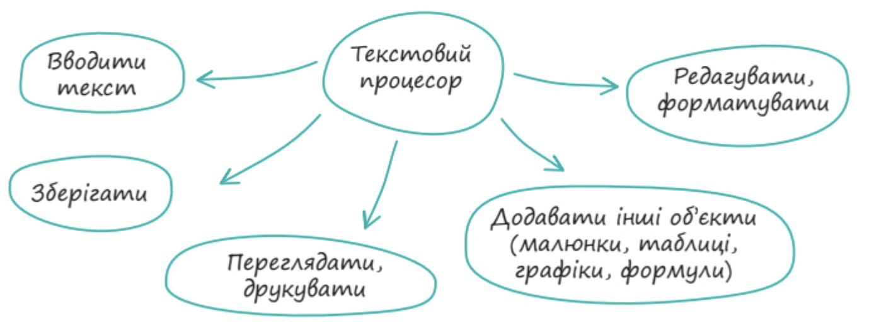
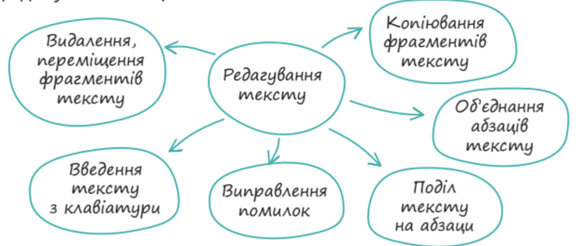
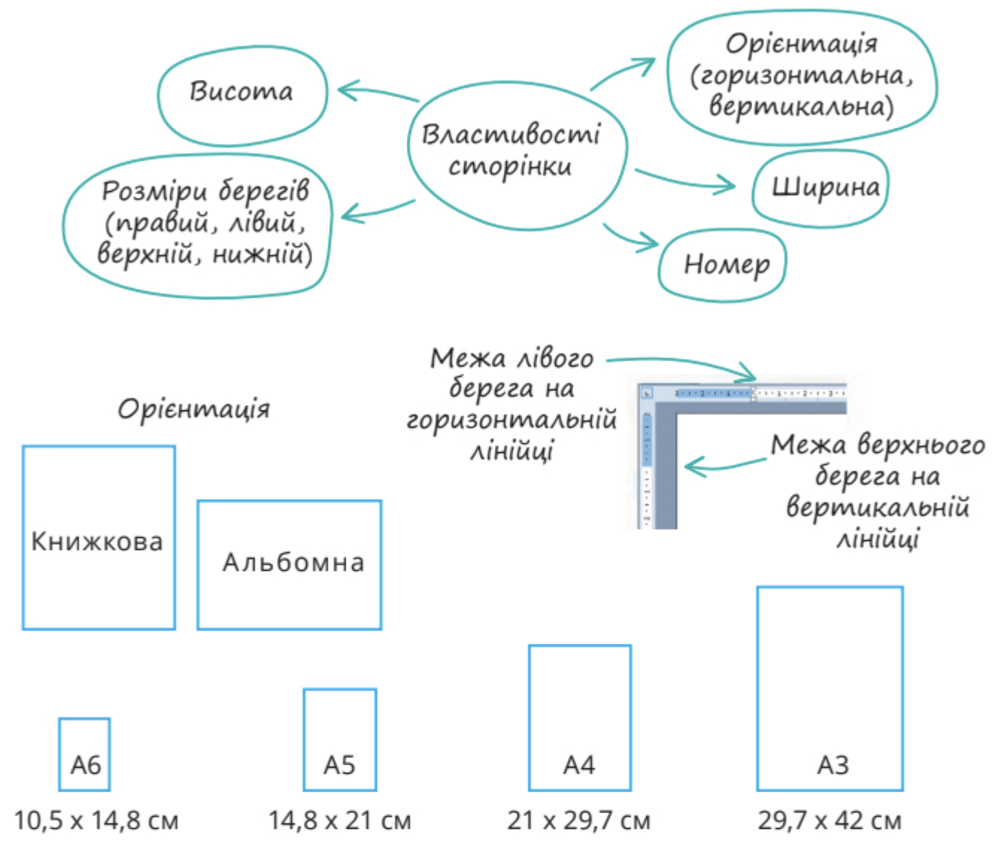
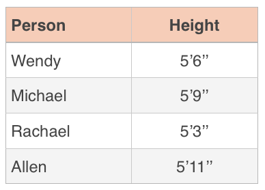

Програмне забезпечення для опрацювання текстів. Правила введення і редагування.
Інформатика, 6 клас
Давайте порівняємо два документи:
привіт,як справи . я роблю домашнє завдання з інформатики.
Привіт, як справи? Я роблю домашнє завдання з інформатики.
Сьогодні ми навчимося перетворювати "Документ 1" на "Документ 2"!
(встановлені на комп'ютер)
(працюють в Інтернеті)



Об'єкти текстових документів
Найменша одиниця тексту: літера, цифра, знак пунктуації, спеціальний знак.
Група символів, відокремлена пробілами або розділовими знаками.
Завершена думка, що починається з великої літери і закінчується крапкою, `?` або `!`.
Частина тексту, що містить одну мікротему. Створення нового абзацу — клавіша **Enter**.
Складова документа, що вміщується під час друку на одному аркуші паперу.
Зображення, фігури, схеми, які можна додавати до документа.
Об'єкти для впорядкування даних у рядках і стовпцях.

Правило №1
Зайві пробіли роблять текст "дірявим" та неохайним.
Я люблю інформатику.
Я люблю інформатику.
Правило №2
Знаки `.` `,` `!` `?` `:` `;` ставляться відразу після слова, а **після** них — пробіл.
Привіт , як твої справи ?
Привіт, як твої справи?
Правило №3
Пробіли ставляться *ззовні* дужок `()` та лапок `«»`.
Книга « Робінзон Крузо » ( автор Даніель Дефо )
Книга «Робінзон Крузо» (автор Даніель Дефо)
Правило №4
Дефіс (-): короткий, з'єднує частини слова, пишеться **БЕЗ** пробілів.
будь-ласка, по-перше
Тире (—): довге, між словами в реченні, виділяється пробілами **З ОБОХ БОКІВ**.
Інформатика — це цікаво.
Правило №5
Щоб почати новий абзац (новий рядок з відступом), натисніть клавішу **Enter**.
Правило №6
Потрібно для переходу на новий рядок без створення абзацу (наприклад, у віршах).
Садок вишневий коло хати,
Хрущі над вишнями гудуть.
(Тут використано Shift+Enter)
Для цього існують спеціальні інструменти форматування!
Тепер, коли ми знаємо всі секрети, давайте перетворимо хаотичний текст на ідеальний документ!
Ваша мета — зробити так, щоб текст було легко і приємно читати.
Сьогодні ми навчилися:
Ці навички знадобляться вам для написання рефератів, доповідей та будь-яких інших текстових робіт!
1. Повторити "Золоті правила введення тексту".
2. Відформатувати свій улюблений короткий вірш у текстовому документі:
Запитання?